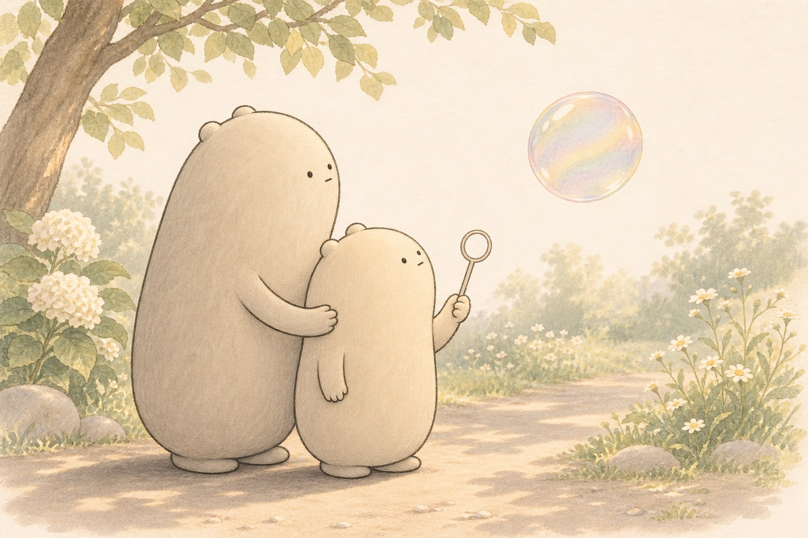

Please Don't Poke the Shine
Little Wonderer blew a soft silver ring,
and a round bit of daylight rose up on a string
of invisible air. "It's a jewel!" said the small one.
Big Wonderer smiled. "It's a film — watch it run."
Colors slid over it, quiet as oil on a spoon,
greens into pinks in the thin afternoon.
"Is it painted?" the little one asked with a grin.
"No paint," said the big one. "Light bouncing within."
They sketched every stripe as the shimmer grew wide,
then asked why a free bubble wears a round side.
"The film pulls in evenly, soft as a sigh —
a sphere is the thrifty shape under the sky."
A hush, then a glitter of droplets like rain.
The shine had let go. Only air would remain.
So if you find rainbows that float for a while,
look kindly, keep poking for never — just smile.